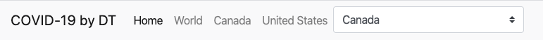
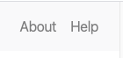
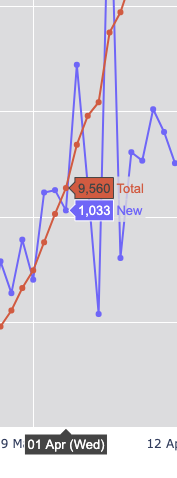
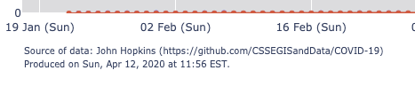
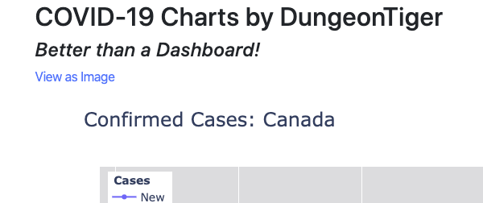
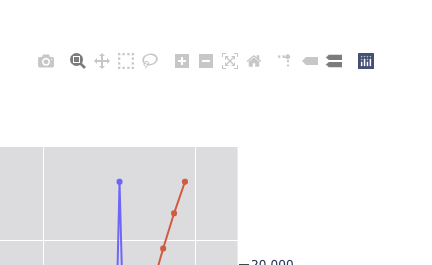

The navigation bar at the top of the site is your primary means of getting around.
Home will take you to main page. World will show you summarizes for all countries, while clicking on a country name will take you to that country's page. The drop down contains all the countries for which there is data. Again, selecting one will take you to that country.
At the far right of the navigation bar, About provides information about the site and the author, while Help takes you to this page.
You can hover over a chart to see specific values for those data points.
At the bottom of each chart is information about when it was last updated and where the data came from.
The charts are drawn with interactive JavaScript. However, each page has a link to the static image version of the chart. Clicking the link will open a new tab with that image.
Hovering over the chart also provides the Plotly chart toolbar. If you don't know what that is I suggest you don't use it. It is intended for advanced users.
